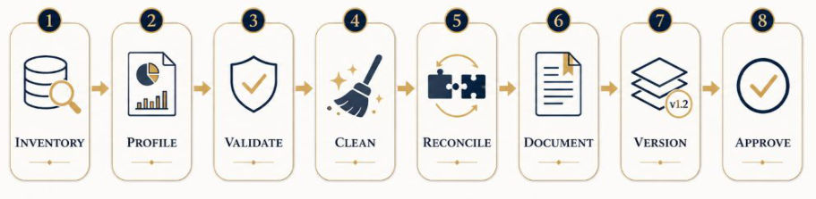
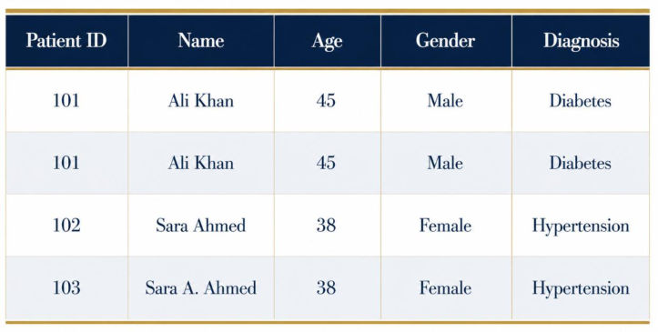
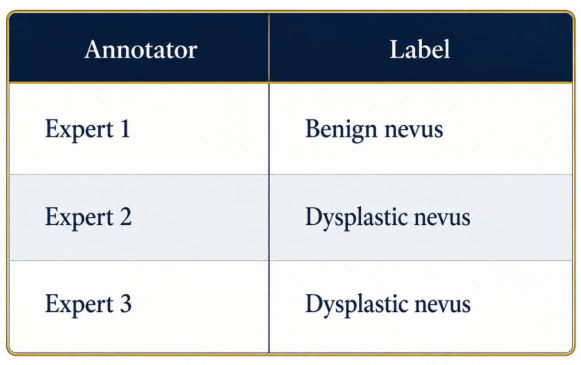
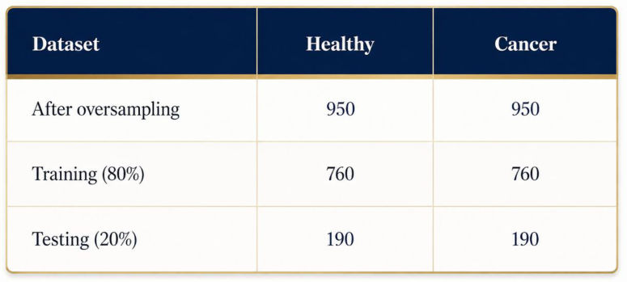
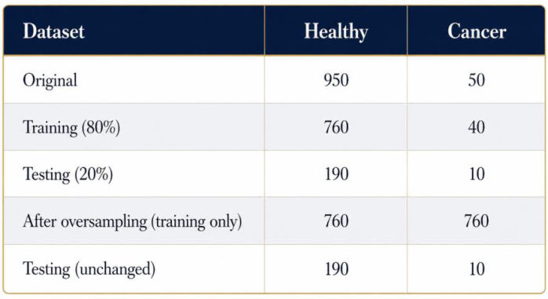
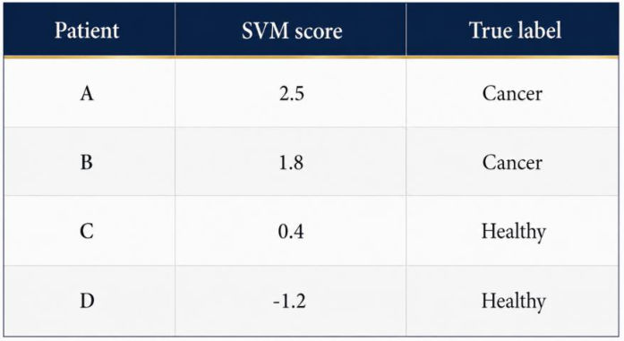
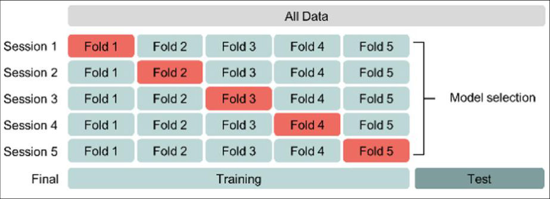
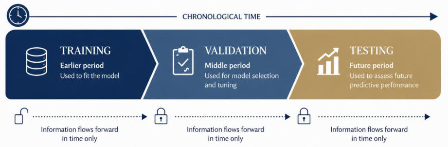
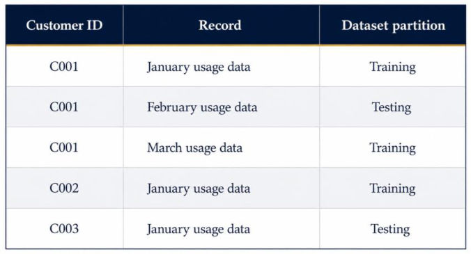
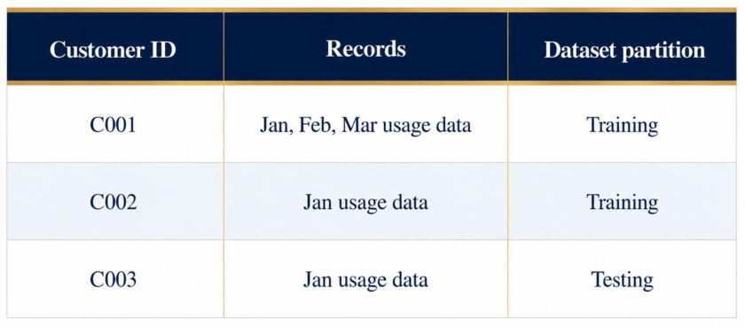

M2 · Part B — Curation, Cleaning and Data Leakage
Module 2 notes, Sections 2.4–2.6 (PDF pages 46–80, printed pages 214–248). Profiling and curation, missing values, outliers, duplicates, labels, units, class imbalance, calibration, and every form of leakage.
Part A showed that data are constructed and that quality has six faces. Part B is about what to do with a real dataset: curate it in a traceable workflow, clean it without destroying meaningful information, and — above all — make sure the evaluation is not quietly fed information from the future or from the test set. Quiz 1 already asked to define temporal leakage (3 marks); Module 2 is where leakage is treated in full.
1. Data curation vs data cleaning (2.4, 2.4.1)
The systematic process of acquiring, organizing, validating, documenting, preserving and maintaining data so they stay accurate, accessible and suitable for their purpose throughout their lifecycle.
Data cleaning is only one part: identifying and correcting errors, inconsistencies and missing values. Curation adds: scope and governance (what belongs, definitions, access, legal basis), integrity and lineage (duplicates, provenance, explicit exclusions, reproducibility), lifecycle management (version control, retiring obsolete data).
Curation activities: decide inclusion; define variables, coding schemes and metadata standards; resolve duplicates; document provenance and collection history; maintain versions; control access; record exclusions and transformations; preserve reproducibility; archive/retire obsolete data while keeping history.
2. The eight-stage curation workflow (2.4.2, Figure 15)


| # | Stage | What happens |
|---|---|---|
| 1 | Inventory | Manifest before touching a cell: source, owner/custodian, purpose, temporal coverage, format & location, unit of analysis, size, sensitive fields, access restrictions, legal basis, update schedule |
| 2 | Profile | Rows/columns, types, unique counts, % missing, distributions, min/max, class balance, duplicates, temporal coverage, subgroup composition |
| 3 | Validate | Schema conformity, value ranges, primary-key uniqueness, referential integrity, logical consistency, chronological order, cross-source agreement (structural, relational, logical tests — many automatable) |
| 4 | Clean | Correct identified defects (missing values, outliers, duplicates, units, labels) |
| 5 | Reconcile | Resolve inconsistencies across sources |
| 6 | Document | Definitions and provenance |
| 7 | Version | Version approved artifacts |
| 8 | Approve | Formal release approval |
Together: reproducibility, accountability, traceability, dependable downstream AI.
Never overwrite raw data without traceability; keep the original immutable. For every change record: original value, corrected value, rule/procedure, date & time, software/tool version, person responsible, justification.
Curation ⊃ cleaning. Inventory before you touch, profile before you clean, validate with rules, and log every change against an immutable raw copy.
3. Missing values (2.5.1)
Causes: measurement never taken; respondent declined; sensor failure; test clinically unnecessary; system failed to record; failed record linkage; deliberate removal for privacy; not applicable. Not all missingness is poor quality — often it is expected and informative.
The pattern of can itself carry information (patients with more lab tests differ systematically from those with fewer).
- MCAR — : missingness unrelated to anything. Box of 30 of 500 questionnaires falls off a truck; instrument glitch on 5% of samples.
- MAR — : explained by observed variables. Younger people skip income (age observed); older patients miss follow-up cholesterol.
- MNAR — depends on the unobserved value itself, even after conditioning. High earners hide income; severely depressed patients don't complete the questionnaire.
These are assumptions about the data-generating process, usually not verifiable from the data alone (you cannot see the values you are missing).
Approaches: keep missing values if the method supports it; missing-value indicators; simple (mean/median) imputation; groupwise imputation; multiple imputation; model-based imputation; drop variables with excessive missingness; collect more data. No single method is universally optimal.
| Method | When |
|---|---|
| Mean | Numeric, roughly symmetric, missingness not tied to extremes |
| Median | Outliers/skew (income, lab values, session durations) |
| Mode | Categorical (Example 48: device_type 2% missing → "Android") |
Indicator is_missing |
Missingness informative (absent log event, skipped optional form field) |
| Model-based (k-NN, regression imputer) | Moderate missingness, predictable from other features (Example 49: BMI from height, weight, age, gender) |
Lactate is ordered mainly when critical illness is suspected, so its absence signals lower severity. Mean or model-based imputation erases that clinical signal. Keep an indicator.
Mean imputation reduces variance, distorts relationships between variables, creates artificial clusters of identical values, and obscures subgroup differences. And: imputation parameters must be estimated on the training data only, then applied unchanged to validation/test — otherwise it is leakage.
4. Outliers (2.5.2)
An outlier may be a genuine rare observation, entry mistake, wrong unit, sensor malfunction, new population, fraud, or distribution change → investigate, don't auto-delete.
- z-score: .
- IQR (robust): ; flag outside . (The notes' main text prints IQR — a typo; the footnote gives .) Example: IQR , fences and .
- Multivariate outliers: ordinary on each variable, impossible jointly — a young person with a very long employment history; transactions in an impossible geographic sequence; physiologically incompatible lab combinations.
These flag cases for investigation, not automatic deletion.
Responses: verify the source; correct documented errors; convert wrong units; keep valid rare cases and use robust methods; Winsorize when justified; separate category; exclude only by predefined, documented criteria.
| Strategy | Idea |
|---|---|
| Clipping/Winsorization | Cap extremes (e.g. amounts above $10,000) — limit influence without deleting |
| Log / Box–Cox | (), (), for ; shifted version uses . unchanged, square-root-like, log, stretches large values |
| Huber loss | if , else : squared for small, linear for large residuals |
| Quantile (pinball) loss | if , otherwise — asymmetric, targets a quantile |
Robust losses: more stable, but slower convergence, need tuning (), may underfit when outliers are the signal.
Fraud, rare equipment failures and ICU deterioration live in the tails. Cleaning should remove errors, not meaningful complexity.
5. Duplicates, entity resolution, labels, units (2.5.3)


- Exact duplicates: identical on all relevant fields. Near duplicates: differ slightly (spelling, format, timestamps, abbreviations) → need approximate matching (string similarity, record linkage).
- Causes: repeated ingestion, repeated submissions, merging systems, manual entry, copied benchmarks, entity-resolution errors.
- Why they matter: bias frequencies, over-weight some observations, inflate apparent sample size, contaminate train/test, optimistic evaluation.
Deciding whether records refer to the same entity using IDs, names, DOB, addresses, phones, device IDs, behaviour. Errors in both directions: false merge (two different entities combined) and false split (one entity left as two).
Inconsistent labels arise from annotator disagreement, evolving criteria, institutional differences, ambiguous cases, taxonomy changes (e.g. splitting Diabetes into Type 1/2), automated-labelling errors, multiple valid labels.
- Raw agreement: e.g. 90 of 100 → 90% (no chance correction).
- Cohen's κ (2 raters): , .
- Fleiss' κ (≥3 raters): , , .
- Adjudication outcomes; class-specific disagreement rates (8% Diabetes vs 25% Pre-diabetes).
(No numerical problems in Quiz 2 — know what κ corrects for: agreement expected by chance.)
Three dermatologists: Benign nevus, Dysplastic nevus, Dysplastic nevus. Consensus dysplastic nevus; benign nevus kept as acceptable alternative — preserving legitimate diagnostic uncertainty for future re-evaluation. Consensus does not always equal truth: majority voting can suppress legitimate expert disagreement. Preserve original annotations, annotator expertise, consensus labels, adjudication decisions, uncertainty, acceptable alternatives.


Test-set label quality matters most: rankings depend on it (Northcutt et al.).
Unit-aware schemas: every numeric variable needs quantity, units, valid ranges, precision, conversion rules, source conventions. Dimensional analysis: keep operations dimensionally consistent; convert explicitly, e.g. — never infer silently.
6. Class imbalance (2.5.4)
. Imbalance: one or more classes far rarer (fraud, rare disease, equipment failure, safety incidents, cyber-attacks). With 99% legitimate, "always legitimate" scores 99% accuracy and catches zero fraud.
Strategies: imbalance-appropriate metrics; class-weighted learning; threshold adjustment; over/under-sampling; collect more minority data; stratified partitioning; reformulate as anomaly detection; cost-sensitive learning. Choice depends on the relative cost of errors.
Wrong: oversample to 950/950, then split 80/20 → train 760/760, test 190/190. Duplicated or synthetic cancer cases derived from the same originals land in both sets → e.g. 99% accuracy, over-optimistic.
Right: split first (train 760/40, test 190/10), oversample only the training set (760/760), leave the test set untouched (190/10). (The notes label both approaches "Incorrect" — the second heading is a typo for "Correct".) In k-fold CV, oversample inside each training fold.




Balancing helps learning but does not change real-world frequencies. Trained at 50% prevalence (real 5%), a predicted 70% cancer risk is too high; after recalibration it might be ~22%.
- Platt scaling: fit a logistic regression on the classifier's scores (not original features) on validation data: . With and score : .
- Isotonic regression: non-parametric monotone mapping from scores to probabilities (e.g. 0.85 → 0.63).


SMOTE (Chawla 2002) creates synthetic minority points by interpolating between neighbouring minority samples — continuous features only. SMOTENC handles mixed numeric + categorical features. Variants: Borderline-SMOTE, ADASYN (more samples for harder minority points).
Accuracy lies under imbalance. Split first, resample only the training fold, keep the test set untouched, and recalibrate probabilities to the true prevalence.
7. Data leakage (2.6)
Information not legitimately available at the intended prediction (or evaluation) time is used during model development → overly optimistic performance that does not generalize. Kaufman et al. (2012): a major, overlooked threat.
Practical test: Could this feature, preprocessing statistic or related record genuinely be available, in the same form, when a prediction is made for a new observation? If no, don't use it.
7.1 Target leakage
Features that directly or indirectly reveal the outcome. Predicting in-hospital mortality at admission must not use discharge disposition, post-mortem procedures, final diagnoses after death, treatment decisions just before the outcome, or variables computed from the outcome. Formally if after prediction time, using violates temporal/causal order.
Subtle proxies: invoice status after default; cancellation codes after churn; interventions started after recognition; notes written after the outcome.
"Broad-spectrum antibiotics prescribed (Yes/No)" is given after clinicians suspect sepsis → near-perfect proxy → AUC 0.99, misleading. Unexpectedly high performance should trigger investigation, not confidence.
7.2 Train–test contamination
Information from evaluation data influences development: identical records in both sets; near-duplicate images across partitions; preprocessing fitted on the whole dataset; feature selection using test labels; repeated tuning on the test set; pretraining on benchmark test examples; synthetic records generated from test records.
Wrong: . Right: , then apply to every partition.
7.3 Cross-validation (2.6.4)
Inside CV, every data-dependent step is fitted inside each training fold: imputation, scaling, encoding, feature selection, over/under-sampling, dimensionality reduction, threshold optimization. CV averages over splits → more reliable comparisons and a sense of variance across folds.


| Scheme | Use when | Tools |
|---|---|---|
| Standard k-fold | Samples ≈ i.i.d. (no time order, groups, dependencies) | KFold, RepeatedKFold |
| Stratified k-fold | Classification, esp. imbalanced — each fold keeps class proportions (else folds with zero positives → unstable precision/recall/F1) | StratifiedKFold, StratifiedShuffleSplit |
| Grouped | Rows belong to patients, users, devices, sessions, households → whole group in one side | GroupKFold, StratifiedGroupKFold |
| Time-series | Temporally ordered data → train always before validation | TimeSeriesSplit |
| Others | LeaveOneOut; ShuffleSplit (random repeated splits, no folds) |
7.4 Temporal leakage (2.6.5)
Future information used to predict an earlier outcome. At prediction time , every feature must satisfy — availability time, not event time. Examples: lab results finalized after prediction time; random mixing of past and future in splitting; revised economic statistics; maintenance records entered after failure; summary statistics using future data. → Evaluate chronologically (train earlier, validate middle, test future).


7.5 Group leakage (2.6.6) and site leakage (2.6.7)
Related observations of the same entity (patient, household, student, customer, device, hospital, region, video, document source, repeated measurements) in several partitions inflate performance — the model recognizes the entity, not the pattern. Require .
C001's January and March in training, February in testing → model learns C001's personal usage → 95% accuracy, misleading. Correct: all of C001's records together (C001, C002 train; C003 test).




Site leakage: if deployment is to unseen hospitals/institutions, hold out whole sites; random patient splits within the same hospitals don't test that.
7.6 Leakage-prevention checklist (2.6.8)
Define the prediction time; build the data timeline; identify grouping variables; partition before any preprocessing; search for duplicates/near-duplicates; exclude targets and derived fields; fit preprocessing on training only; resample only within training partitions/folds; keep an untouched test set; investigate suspiciously strong features; document when each feature becomes available. Evaluation design must mirror deployment (future time, new institutions, unseen populations).
Quiz 1 Q1(b) (define temporal leakage + why it makes results unreliable, 3 pts) and Q3(b) (the "emergency-repair-completed" field) were both leakage. Module 2 Scenarios S3 (mean imputation before split), S4 (SMOTE before split, image-level split, full-data standardization) and Reflection R3 (sepsis: antibiotics, ICU transfer, firmware, sites) are leakage-hunting cases. Name the type, explain the mechanism, state the fix.
Four leaks + one: target (feature encodes the outcome), train–test contamination (test info shapes training — duplicates, full-data preprocessing, resampling before split), temporal (future info; use availability time), group (same entity on both sides), and site (hold out whole institutions). Fix: split first, fit everything inside training folds, group and time-aware splits, untouched test set.
Source material
The original documents behind these notes. Pick a tab to read it here, page by page, or open it in a new tab.